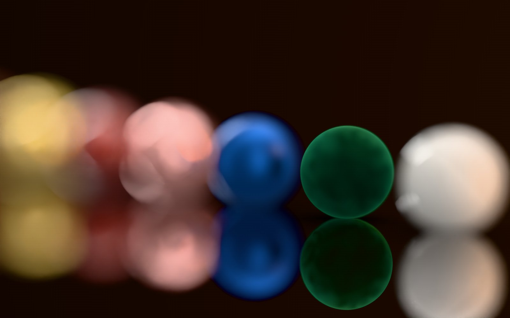
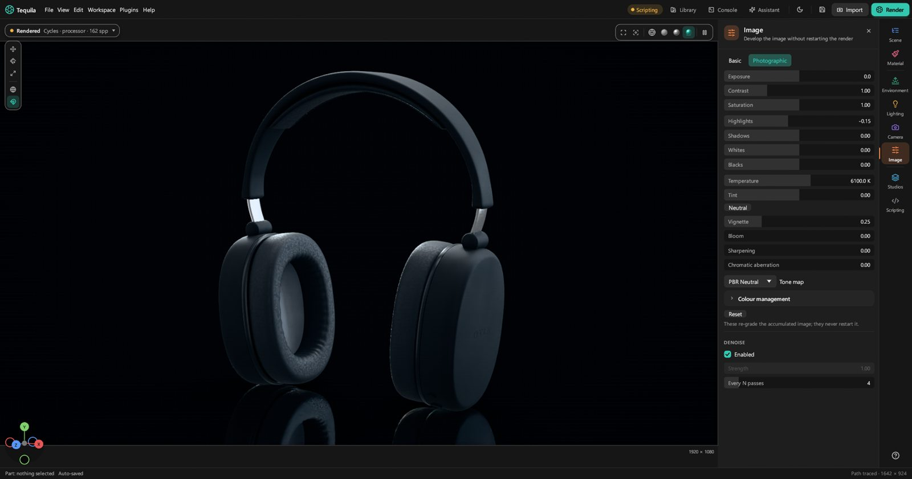
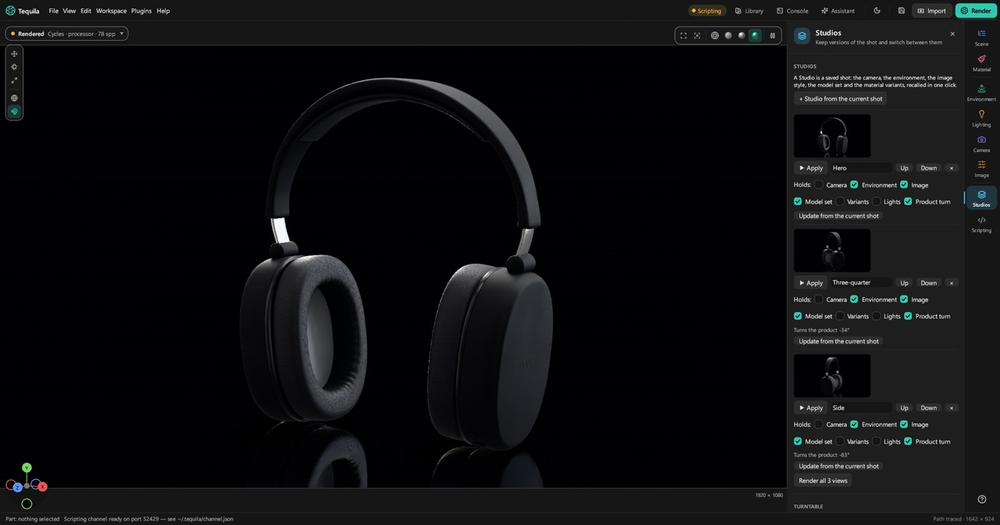
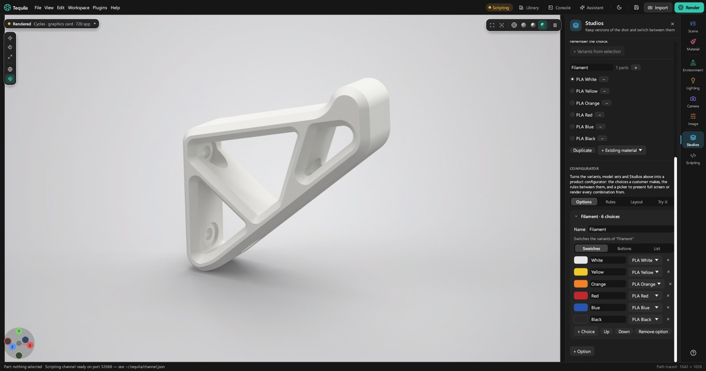
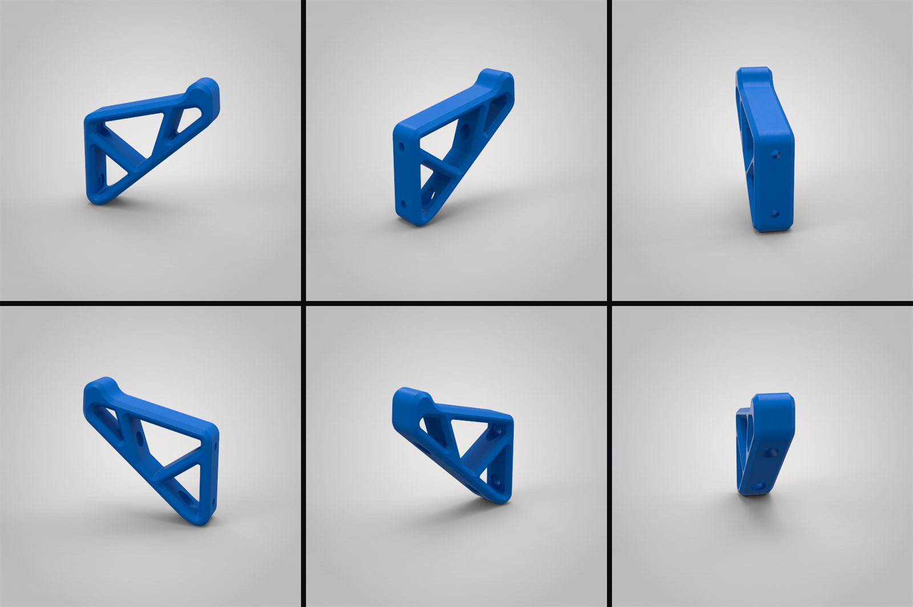
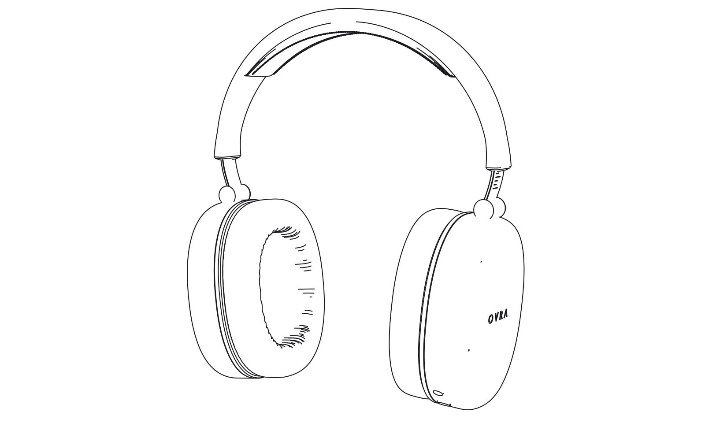
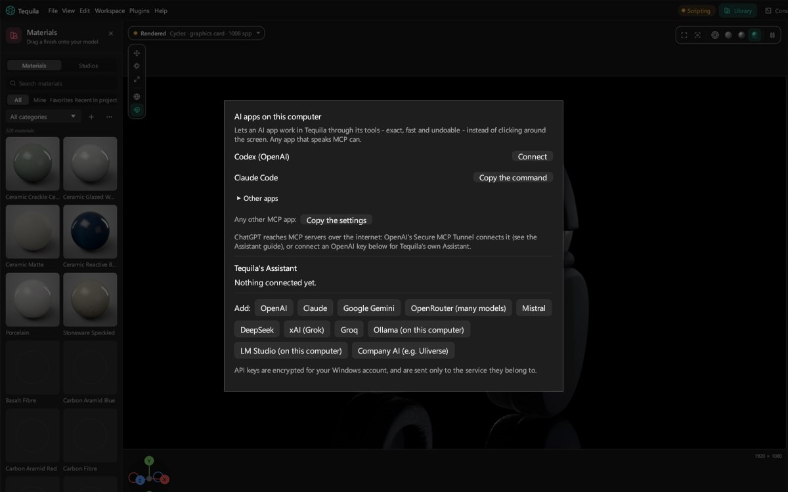

Shots worth showing.
You can get a model in and render it. These lessons are about making the picture good: real surfaces, artwork, shaped light, focus and grading, and a set of shots you can come back to. Take them in any order.
1. Organise and place a model
A tidy parts list makes everything after it quicker: a group can be dressed, hidden or moved in one go.
- Group: select two or more parts and press Group in the Scene tab (Ctrl+G). Ungroup undoes it.
- Rename: double-click a row, or select it and press F2.
- Reparent: drag a row onto a group to put it inside (a box shows), or onto any other row to put it beside that one (a line shows).
- Lock: the lock on a row stops that part, and everything in it, being moved, deleted or re-dressed by accident.
- Search: the box at the top takes a name, or a field and a value from the model's data, like
Material = ABSorAB*. Select all selects everything it found. - Selection level: Select sets what a click picks: a Part, the Object it belongs to, every part with the same Material, or a Face.
Moving parts
- Select a part and press W (move), E (rotate) or R (scale), or use the tool strip at the viewport's left.
- Drag a handle. Arrows move along an axis, squares in a plane, rings rotate. The button under the tools switches between Local axes and World axes.
- Snap with the magnet: Grid snap, Angle snap (15°, on to begin with) or Vertex snap, which lands a corner on another part's corner.
For exact numbers, the Scene tab's Transform section takes a position you type, with units (2.5in) or a sum (=120/2). Drop to ground sets the part on the floor. Pivot sets the point it turns about; hold Insert and click the model to put it exactly there.
To check a size, open Measurements in the Scene tab, press Measure and click two points. It snaps to corners, midpoints, edges and surfaces, and the distances are saved with the project.
2. Textures, patterns and texture packs
Any setting on the Material tab can be driven by a picture or a pattern instead of one value: a wood grain in the colour, scratches in the roughness, a weave in the bump.
- Press the picture button at the right of a setting ("Drive this from an image or a pattern").
- Choose Image… for a picture file, or one of the 17 patterns: Noise, Cellular, Scratches, Marble, Wood, Wood (Advanced), Brushed, Noise (Texture), Ridged noise, Granite, Leather, Spots, Camouflage, Contour, Brushed (Radial), Weave, Perforated mesh.
- Adjust it. The pattern's own controls appear under the setting. On a colour, Colour ramp maps it onto colours you pick, with presets Greyscale, Wood, Marble and Rust. On bump, Depth says how far its highest point stands above its lowest, in millimetres.
- Fit it to the part in the Mapping fold: the Projection (UV, Tri-planar, Planar, Cylindrical, Spherical), Real-world size, how many Repeats, Offset, Rotation and Wrap.
The x beside the setting's name takes the picture off and goes back to a plain value.
Texture packs
A PBR texture pack (from ambientCG, Poly Haven or Megascans, say) has several maps of one surface. Tequila turns them into one material in one step:
- Select the parts it's for.
- Choose File › Import texture pack › From a folder… or From a ZIP or one of its maps…, or drop the folder or ZIP on the window.
- Check the size. One repeat is sized to the part to begin with. Texture size on the Material tab changes it.
Good to know. A pack follows the model's own UV layout when it has one; CAD parts and parts without a layout get tri-planar mapping, which needs none. For bump, a file whose name ends in _normal, _nrm or _n is read as a normal map; anything else as a height map.
3. Labels and printed artwork
A label is artwork printed on a part: a logo, a button legend, a packaging design. Transparent areas let the material show through.
- Select the part, and in the Material tab's Labels press + Add label…. Pictures and video both work; for a video, pick the frame you want and press Use this frame.
- Press + Place and click the part where the artwork should go. Drag to slide it, Ctrl+scroll to size it, Shift+scroll to turn it, and Esc when you're done.
- Finish it in Placement & finish.
- Placement: On UV map follows the part's layout, Project flat shines it on from one side like a projector, Wrap around rolls it round a cylinder such as a bottle. Fit to part sizes it to the part.
- Finish: Opacity, its own Roughness, Ink (white artwork prints in the ink's colour) and Foil for a metallic hot-stamp.
- Prints on: a flat projection prints right through the part. Choose + side or − side to keep it off the back.
Tip. Artwork that says its print resolution (most PNGs and TIFFs from a design app do) arrives at its real printed size on a Project flat label.
4. Your own material library

- Keep one you tuned: on the Material tab, Save to library…, give it a name and a category, and press Save. It's on the library's Mine shelf, pictures and patterns included.
- Make one from scratch: the + in the library (or File › New library material…) starts from a Blank type, the Selected part, a Texture pack or a File.
- Change a shipped one: right-click it › Duplicate to my library. The shipped materials can't be changed themselves.
- Right-click one of your own for Edit details… (name, category, tags), Update from the selected part, Export… (a
.fsmatfile to share) and Delete…. - Bring one in: File › Import material file… takes
.fsmatand material files, and KeyShot.kmpmaterials. Or just drop the file on the window.
Good to know. A saved material is a copy. Tuning the part afterwards doesn't change the library's version until you use Update from the selected part. Projects keep their own copies too, so deleting a library material never breaks a project.
5. Shape the light with pins
Pins are lights painted onto the environment: softboxes, strips, pictures and backdrops. They light the product, cast soft shadows and show in its reflections, which is where most of a product photo's look comes from.
- Open Lighting pins on the Environment tab and press + Softbox. Or start from a setup: Three-point, Overhead softbox or Two strips (these replace the pins you have).
- Place it. Drag it on the map at the top of the tab, or set Around ° and Height ° (90 is straight overhead).
- Shape it: Brightness, Size °, Softness (how it falls off to its edge, like a diffuser), Turn °, and Shape: Box or Round.
- Aim the highlight. Press the pin's ◎ Aim and click the model where you want its highlight; the pin moves so it lands there. Drag to slide it, Esc when done.
- The eye on a pin's row hides it from the background without turning it off: it still lights and still reflects.
- + Image… paints a picture into the environment: a window, a photographed softbox.
- + Backdrop adds a gradient behind the product that doesn't change the light at all.
The floor, and the sun
- Ground (on the same tab) sets the floor: Catch shadows, Ground reflections and how they fade, Floor bounce, and the floor's size. Turn off Ground plane to have no floor at all.
- Sun & sky replaces the environment with a physical sky: Light the scene with a sky, then Midday, Afternoon, Golden hour or Overcast, and the sun's direction and haze. Pins still work on top.
6. Lights in the scene
Sometimes a light has to be in the scene: inside a lamp shade, close beside the product, or a spot on one part.
- In the Scene tab, choose Add › Light and pick Area light, Disc light, Point light, Spot light or Sun.
- Move it with the gizmo, like a part.
- Set it up on the Material tab. With a light selected, that's where its settings are: its size or cone, its strength, and its colour or Colour temperature.
Good to know. A light's strength is a number and a unit: lm, nits, cd or lx. Switching the unit keeps the number you typed rather than converting it.
7. Lens, focus and depth of field
- Depth of field: tick it, then set the f-number (smaller means less in focus) and the Focus distance. Keep focus keeps the camera's target in focus as you orbit. There's no click-to-focus: set the distance, or let Keep focus follow the target. Aperture chooses round or bladed out-of-focus highlights.
- Lens: Perspective as a camera sees, Orthographic with no perspective at all (for technical views), Shift to keep verticals straight as on an architectural camera, or Spherical for 360° pictures.
- Field of view and Sensor width are the same lens described another way; Full frame sets a 36 mm sensor.

8. Develop the picture
The Image tab works on the picture the way you'd develop a photo, and none of it starts the render again: change it as the samples build up.
- Basic has Exposure, Contrast and Saturation.
- Photographic adds Highlights, Shadows, Whites, Blacks, Temperature and Tint (Neutral resets them), Vignette, Bloom, Sharpening and Chromatic aberration.
- Tone map decides how bright light is squeezed into the picture: PBR Neutral (the default) keeps product colours true; AgX and ACES are filmic.
- Denoise cleans the noise out as it renders. Reset puts the grade back.

9. Studios and studio presets
A Studio is a saved shot inside the project: a hero, a side view, a dark version. A studio preset is a lighting setup you keep for any product.
Studios in a project
- Set up a shot, then on the Studios tab (U) press + Studio from the current shot.
- Choose what it holds: Camera, Environment, Image, Model set, Variants, Lights, Product turn. What it doesn't hold, it leaves as it is.
- Switch shots by clicking a Studio's picture or ▶ Apply. Update from the current shot saves changes into it.
- Render them all: with two or more Studios, Render all N views queues one render of each.

Studio presets
- Save one: in the library's Studios, press Save current studio…, give it a name, a family and a size, and save. The viewport becomes its picture.
- Apply one to another product: pick it and press Apply. Say which way the product faces, and whether to scale the cameras (and lights) to it, keep your own lights or cameras, or leave the product where it is. The whole apply is one undo step.
- Share one: Export… writes a package that Install… reads on another computer.
10. Colourways
Material variants are several materials for the same parts, one in use at a time: a product in red, blue and black.
- Select the parts with the material to vary, and in Material variants press + Variants from selection.
- Add the others. Duplicate copies the one in use for you to recolour on the Material tab; + Existing material adds one already in the project.
- Switch with the round button beside each. A Studio that holds Variants remembers which was on.

11. Turntables and spin viewers
- On the Studios tab's Turntable, set how many frames, how many degrees and the frames per second; Ease in and out starts and stops it gently.
- Press Make turntable. Frame N and Show preview any frame.
- Press Render N frames. They're saved as numbered pictures, ready to join into a video in any video editor.

Stopped part-way? Render again: frames already done are skipped.
A spin viewer is a web page where people drag to turn the product. File › Export spin viewer… asks for Frames round, Rows of tilt and the direction, optionally with a Transparent background, then renders into a new folder and builds the page when the frames are done.
12. Cut-outs, line drawings and file types
- Transparent background: File › Alpha. Straight or Premultiplied keep the floor's shadow, ready for compositing. Silhouette cuts the product out along its outline with glass kept solid: the catalogue cut-out.
- File type: Format is PNG, JPEG, TIFF, EXR or PSD, at 8, 16 or 32 bits where the format allows. JPEG has no transparency.
- File names: the + project, + camera, + view, + date… buttons add parts to the name, so batches name themselves.
- Line drawings: Render wireframe draws the model's edges in a second or two, with hidden lines faint, hidden or shown, on a dark background or on Paper.
- The queue: renders wait their turn along the bottom of the window. Right-click one to hold, move or remove it. Stop & save keeps a render that's good enough already.
- Compare: right-click a finished render › Compare with the one on screen, and drag the split.

13. Ask an AI to do it
The Assistant panel takes requests in your own words, like "make the strap black velvet and light it like a studio shot", and makes the changes in the scene: materials, textures, lighting, camera. It can make a material from a description when nothing in the library fits.
- Press Assistant in the toolbar, then Connect an AI….
- Pick a provider (OpenAI, Claude, Google Gemini, Mistral and others, or Ollama and LM Studio on your own computer) and give it your key, or choose one of the AI apps on this computer and press Connect.
- Ask. Enter sends, Shift+Enter starts a new line. Undo request takes back everything the last request changed.

Made something good? Share it on the Discord.
Join the Discord